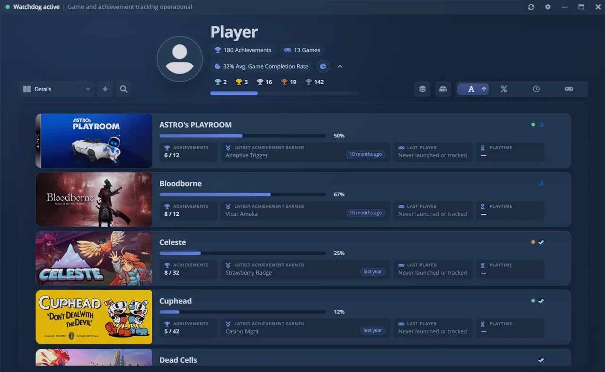
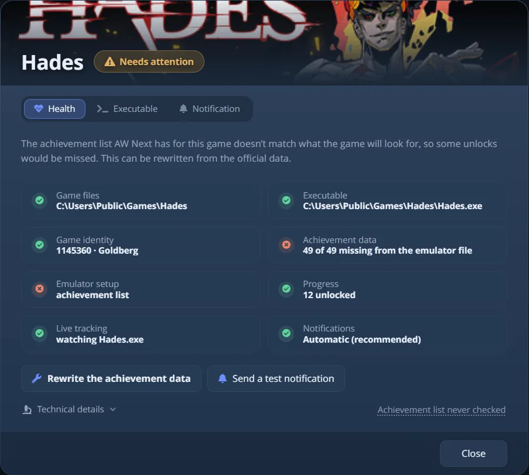
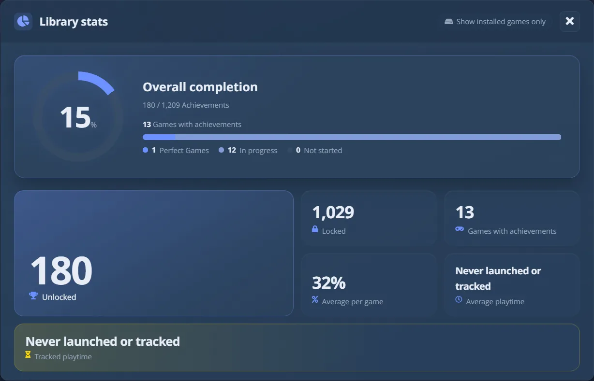
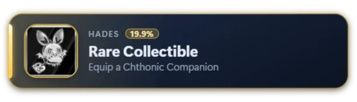
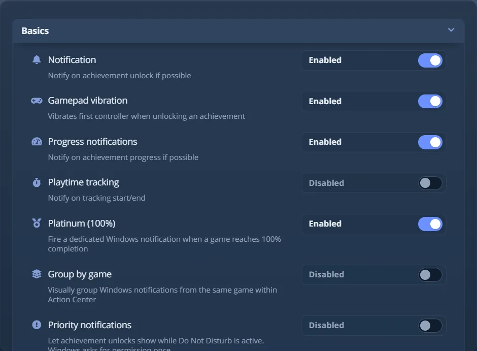
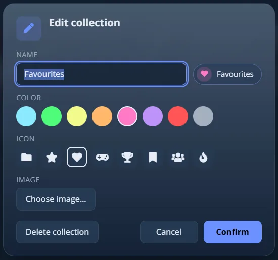
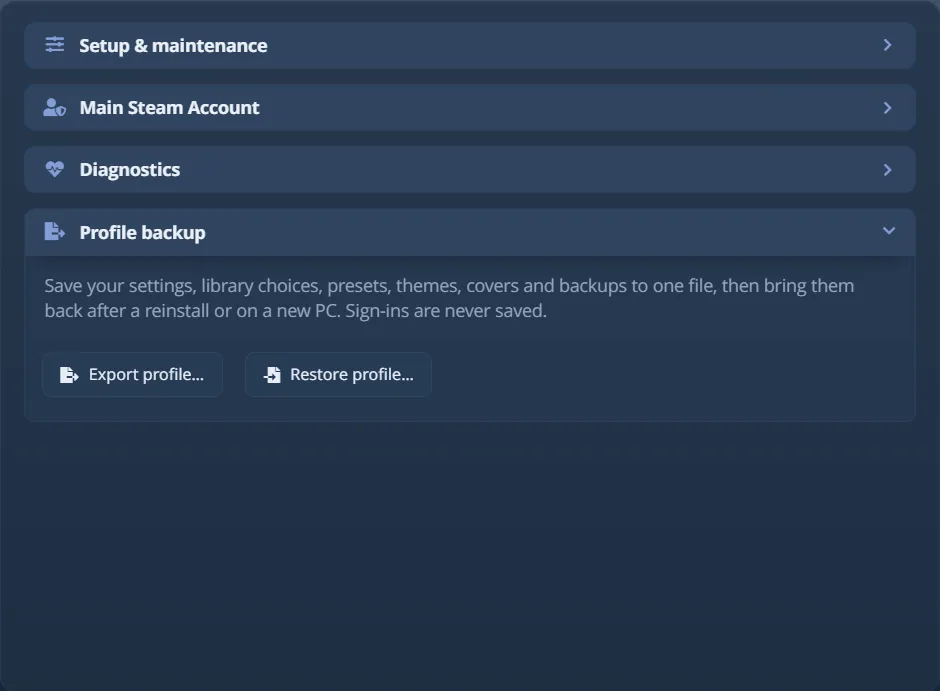
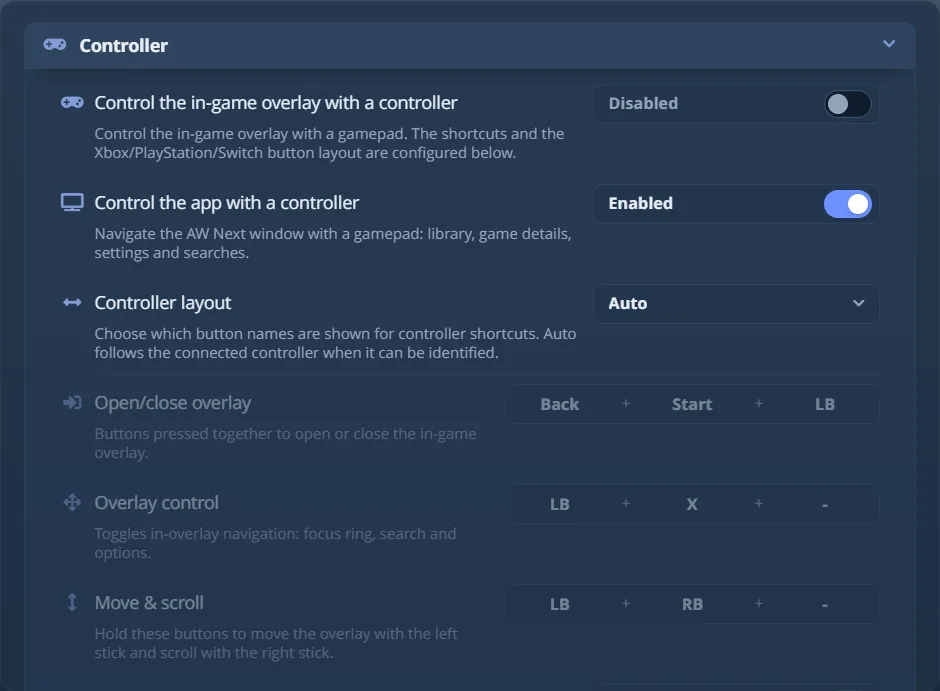
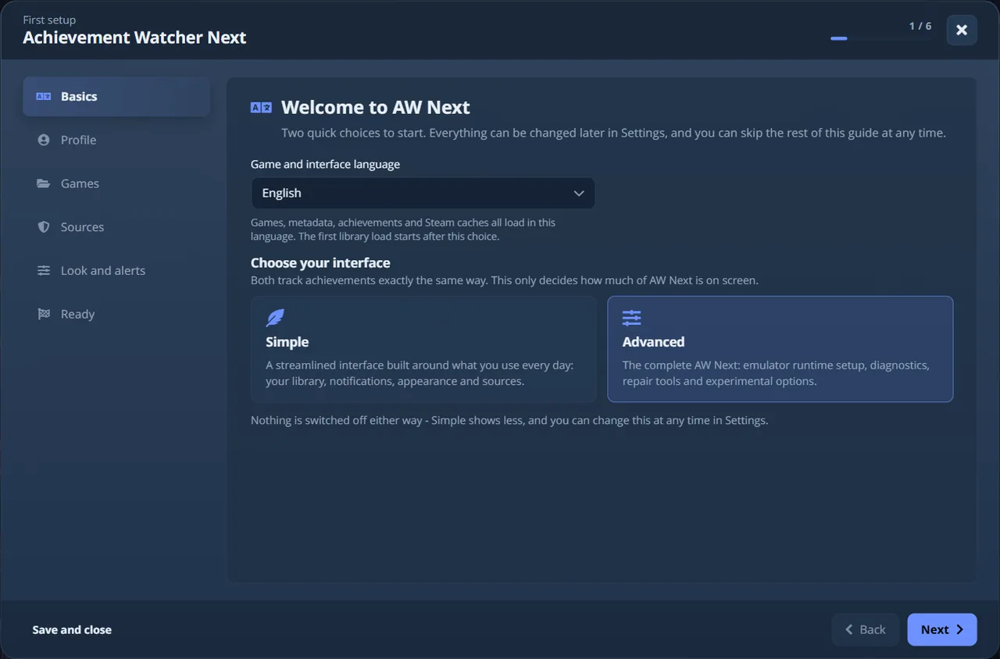
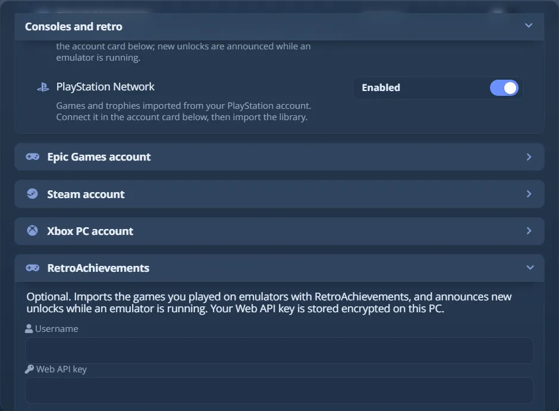

One library
Every enabled source in one list, with unlock history, rarity tiers, progress achievements and cover art. Six views, from large cards to a dense table, and all of it cached so it opens offline.

Steam, GOG, Epic, Ubisoft, EA, Xbox PC, RetroAchievements, emulators and local saves in one library. Unlock something and the popup lands over your game.
Preset AW Next
Every enabled source in one list, with unlock history, rarity tiers, progress achievements and cover art. Six views, from large cards to a dense table, and all of it cached so it opens offline.

Made above all for cracked and emulated games: their achievements live in their own files, a Steam emulator's save (Goldberg, GBE Fork, CODEX, RUNE, CPY…), an emulator's folder, a Uplay R1 or R2 config, and AW Next reads them there, offline. When one does not show up, Game Health checks the game, says Ready, Needs attention or Not tracking with the reason in plain words, and offers the one repair that fits, confirmed first and backed up.

Like a console's trophy video: the last seconds of play stay in memory, encoded by the graphics card, and the stretch around each unlock is saved as an MP4 with the popup in it. Or a screenshot a moment after the unlock, tone-mapped to a clean PNG even with Windows HDR on.
Overall completion, perfect games, unlocked and locked counts, the average per game, your trophies by grade and your rarest unlocks, with a row per platform. One click from the profile header.

Each source is a switch in Settings. Achievement lists come from public endpoints and are cached on disk, so there is no Steam Web API key to paste anywhere.
Reading achievements never writes anything. The emulator repair tools do change game files, after a confirmation and with a backup. Use them only with games you own.
What each source needs from youEach design paints four states: a normal unlock, a rare one, 100% and a progress step. They are all running here.
The default. The app's own palette, an accent rail down the left edge, a ringed icon and the game's name above the achievement.
Settings has a designer for layout, type, colours, motion, the rare and 100% treatments and a sound. No CSS, no JSON, and the preview is the real popup. Start from a ready-made style or press Surprise me.
How the designer works
Export writes one .awpreset file with the style, images and fonts, and nothing from your machine.
Themes made in Steam Achievement Notifier convert on import.
A preset paints the popup. A theme paints the rest of the app, the in-game overlay included. Pick one and the window below is repainted with it.
The default. The app's own blue, a lighter title bar and a library panel a shade darker than the window behind it.
Settings, Theme, Custom opens an editor over nine layers, from the window to the accent. Each takes a colour, an opacity and a background image, and the app repaints as you drag.
What a theme file holds
Export writes one .awtheme file: colours, numbers and any image, with no stylesheet and no
script, so an imported theme has nothing it could run.
Found in the first week rather than the first minute. Each one has a guide.

Grade every achievement gold, silver or bronze by how rare it is, with platinum for a finished game.

On Automatic, each unlock goes where you can see it: the overlay while you play, a desktop notification in exclusive fullscreen or when the overlay fails. Never both at once.
Ctrl+Shift+K brings the running game's achievements up over it, with search, filters, rarity badges and hidden descriptions on demand. A gamepad drives it too.

Your own lists of games, with a colour and an icon. The library and the profile totals follow the one you pick.

Settings, library choices, presets, themes and playtime in one file, for a reinstall or a new PC.

Drive the library, the overlay and Settings with an Xbox, PlayStation or Switch pad.

Six steps from language to alerts. It finds what is installed, and everything it asks can be changed later in Settings.

Connect your account, import every game you played, and unlocks from any emulator that reports to it are announced within seconds.
Windows 10 · 11
Achievement.Watcher.Setup.<version>.exe from the releases page, or
Achievement.Watcher.Portable.<version>.zip if you would rather have no installer:
extract it anywhere and its data stays beside it. Nowhere else publishes them.
Settings and data: %APPDATA%\Achievement Watcher Next
Linux AppImage, beta
Achievement.Watcher.<version>.AppImage from the same page: make it executable and
start it. It needs FUSE 2 (libfuse2), updates itself and watches the games you run through
Steam, Proton, Wine, Lutris, Heroic or Bottles. The Linux guide covers desktops,
the overlay shortcut and the Steam Deck.
Settings and data: ~/.config/Achievement Watcher Next
An upgrade keeps your settings and data, downloads only what changed and installs only a release signed by the project. The first launch imports an older Achievement Watcher folder without modifying it.
The current installer on VirusTotal. A few heuristic detections are the emulator false positive; check any release yourself by comparing its SHA-256.
Written for the version that is out. The in-app Help tab is the same material, translated, and it reflects your actual configuration.